A
死日
星系中唯一的恒星已经燃烧殆尽，如今更像一颗巨大的岩态行星。它仍散发淡绿微光，表面附着的不明物质，或许与人偶化存在联系。
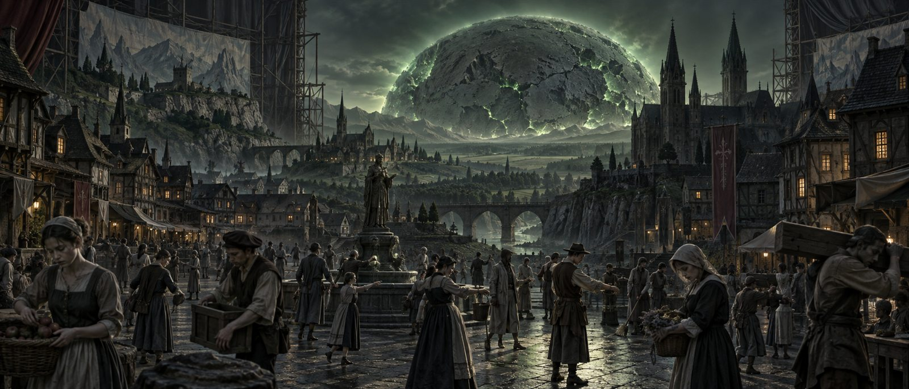
WORLD ARCHIVE · 001
死日燃尽，蓝月长明。世界是一座永不谢幕的剧场，而每个人都可能在下一刻忘记自己。
01 / WORLD LAWS
这里的昼夜不是时间，而是某种看不见的舞台指令。
A
星系中唯一的恒星已经燃烧殆尽，如今更像一颗巨大的岩态行星。它仍散发淡绿微光，表面附着的不明物质，或许与人偶化存在联系。
B
唯一的卫星。月面遍布蓝色荧光植物，光芒并非来自反射。植物赖以生长的条件，很可能正是死日的光。
PHENOMENON 01
症状出现后，个体会迅速失去身体控制与思考能力，像机器一样执行固定事件。随机触发通常短暂；死日升起后出现的固定触发，则持续到蓝月再次升起。
“人们醒来后只记得蓝月将要升起。那些自以为拥有的记忆，真的是亲身经历吗？”
四大家族成员的身份凭证。一人一面，随新成员诞生而制作。
蓝月光芒最盛的罕见时刻，也会令居民普遍感到不适。
仅能在月圆时举行的宫廷秘仪，以一场汇聚要员的大剧激发死日之力。
02 / PLACES
王都的一切都像精心布置的舞台装置。建筑、礼法与权力，共同服务于那场永不结束的演出。
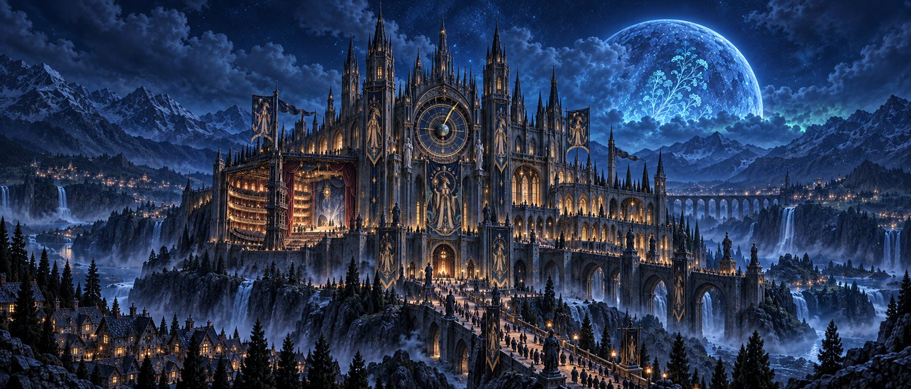
权力中心 · 王都
新人偶帝国唯一的权力机构，也是君主菲·苏普雷玛的居所。城堡中央悬着无人知其来历的巨大圆盘；指针转完一圈，蓝月便将落下。
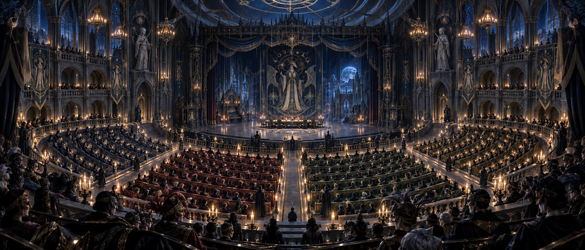
仪式核心
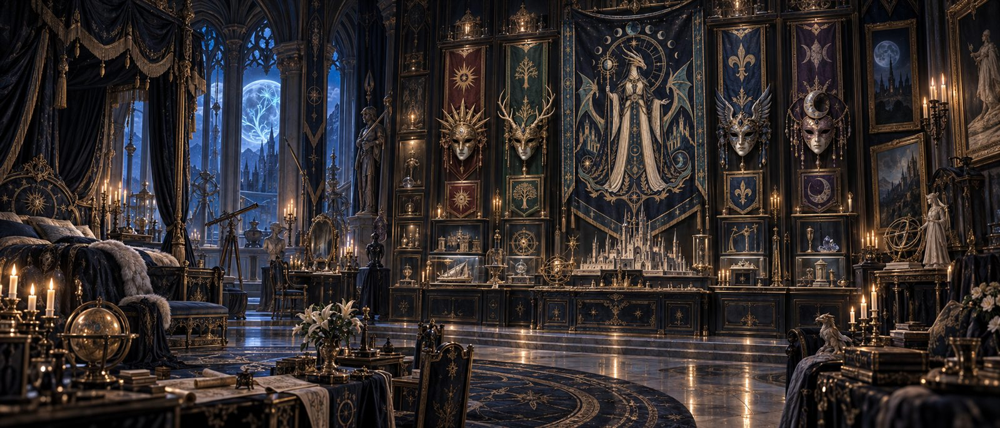
禁入区域
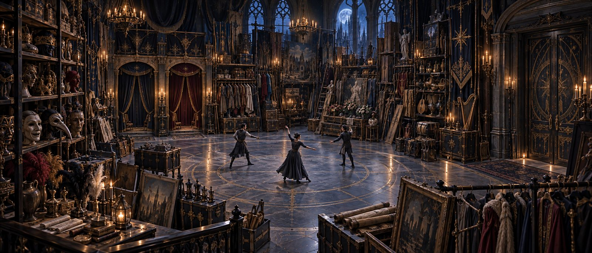
演出后台
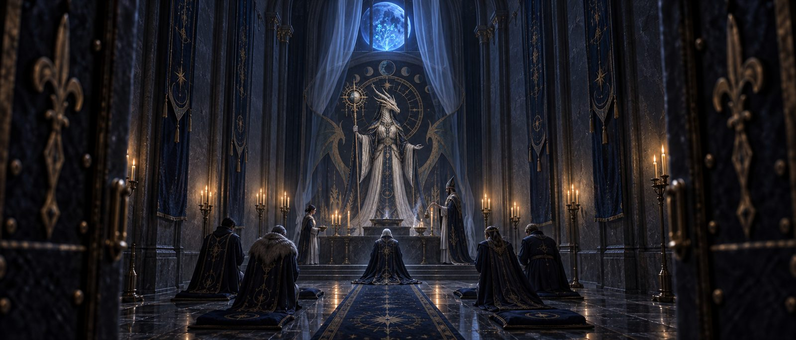
月圆仪典
常年迷雾、资源匮乏的边疆村落，曾是温德克斯军据点。王都对它的现状所知甚少，军方档案仍将其标记为反抗军控制区。
03 / CAST
王座、祭坛、厨房与舞台——每一个角色都在升华仪式中拥有不可替代的头衔。
04 / FACTIONS
国教
全称奥索多克西亚·德拉科尼斯教，信奉龙之巫女。教义要求民众在蓝月落下前归家，并将一切预见未来的行为视为亵渎。
地下教团
反对龙之巫女，教义开放。它或许已消失，但留下了包括预言术在内的大量禁忌秘术。
反抗势力
认定随机人偶化源于君王的神秘仪式，主张推翻现政权。马尔吉内斯曾是其大型据点。
05 / THE FOUR HOUSES
血统、贡献、秘术与变革。四种信条，支撑着帝国最古老也最危险的权力结构。
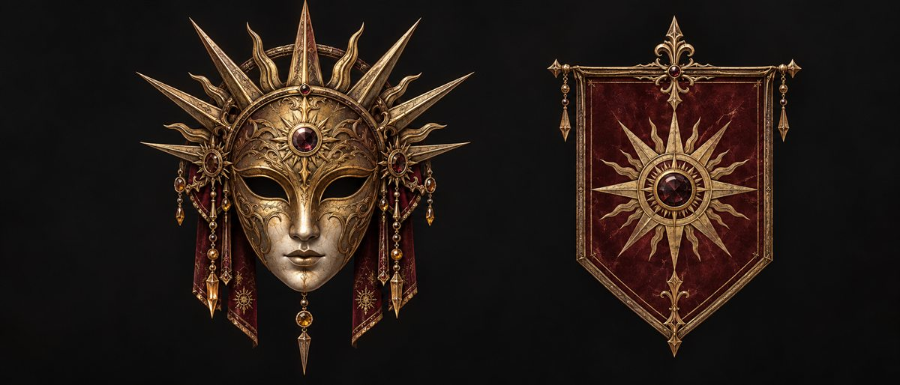
第一家族
旧王朝的显赫余晖。势力遍布权力中心与上层贵族，坚持唯有正统血脉才是家族成员。
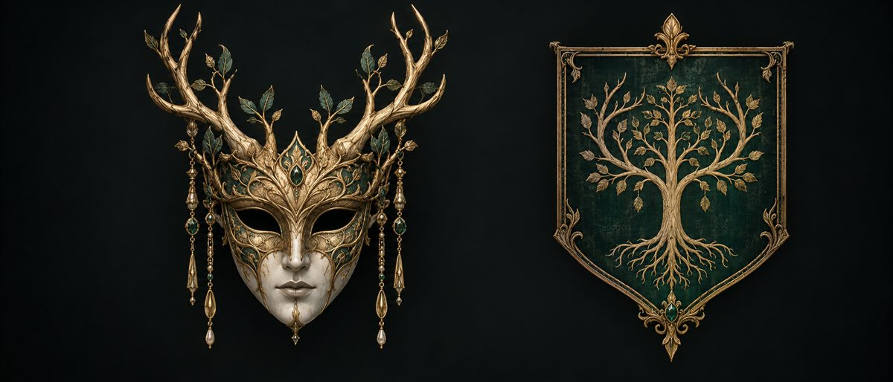
第二家族
帝国规模最大的家族，不拒绝外来者。只要为家族与国家作出贡献，便可成为其中一员。
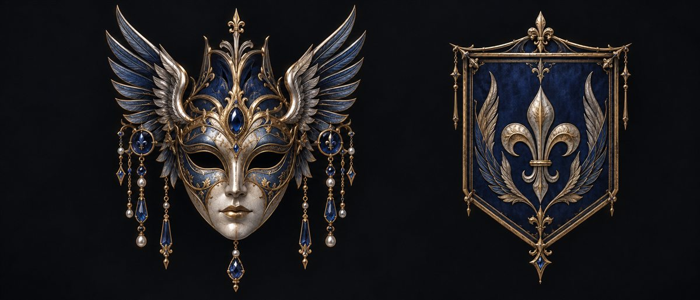
第三家族
曾拥有最杰出的术士。魔法灾难与禁魔令令其衰落，但族人仍散布于帝国各个领域。
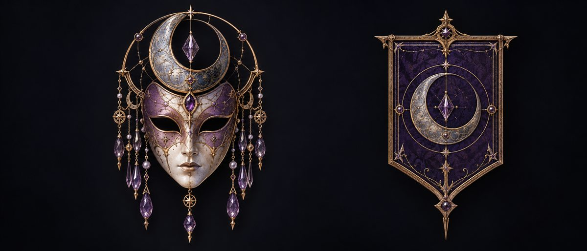
第四家族
来历成谜的新兴家族，拥抱新思想与一切有能力的人，也承受着频繁人偶化的疑云。
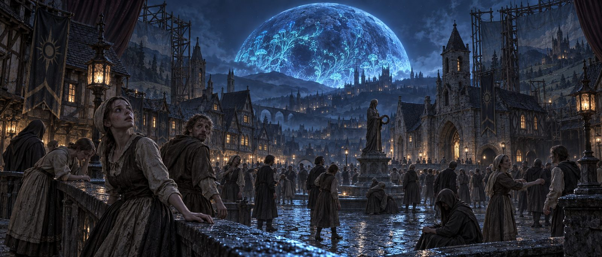